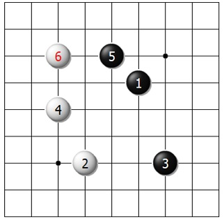
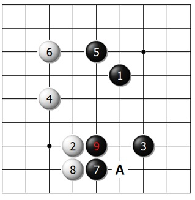
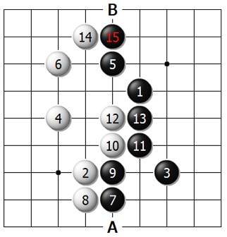
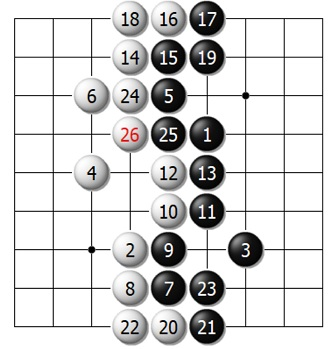
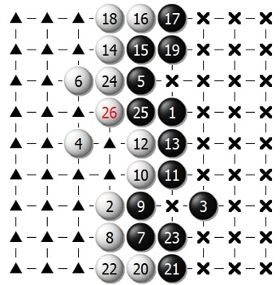

Протянул однажды Суслик лапу и взял горстку горошин у Хомы под боком.
− Ты чего у меня берешь? − рассердился Хома. И зачерпнул ладошкой прямо под носом Суслика.
− Ты вон как?! − вскочил Суслик. − Давай все делить!
Вначале по горошине делили и около себя сыпали. Надоело. Потом − по пригоршне.
− У тебя лапа больше, − спохватился Хома. − Вон какая загребущая! Давай, ты одной лапой, а я двумя?
− Ишь ты! − не согласился Суслик. − Умный, да? Промерили они кучу шагами. И прокопали посредине в горохе границу-канавку, от стены до стены.
Так и возникла игра Го.
Целью игры является захват территории.
Выигрывает тот, кто к концу игры захватил больше территории. Некоторые
японские бизнесмены применяют это правило в стратегии поведения на рынке:
"Не пытайся удалить конкурента (как в шахматах), взаимодействуй с ним,
но получи большую долю рынка."
На примере партии на доске размером 9х9 посмотрим,
как захватывается территория. Партия на такой маленькой доске не богата стратегическими
приёмами, но правила и даже некоторые тактические приёмы не отличаются от игры на большой доске.
Рекомендуется осваивать правила именно в игре на доске 9х9. Затем можно перейти к игре
на доске 13х13. Вскоре, сыграв около 100 коротких партий, вы начнёте чувствовать себя
уверенно в игре на стандартной доске.
 На рисунке чёрные сделали первый ход вверху справа. Потом ход сделали белые. Обе стороны продолжали ходить по очереди, в соответствии с правилами игры. К ходу б.6 территория обеих сторон начинает обретать форму. Чёрные застолбили правую сторону, белые возлагают надежды на левую.
 После того, как оба игрока обозначили свои претензии на территорию, возникают две основные стратегии. Первая – увеличить свою территорию, одновременно уменьшая территорию противника. Вторая – вторгнуться в сферу влияния противника. Ход ч.7 следует первой стратегии. Чёрные расширяют свою территорию внизу справа, и не позволяют белым расширить свою территорию ходом «а». Белым следует защититься 8, чтобы остановить продвижение чёрных глубже в свою территорию. Далее чёрные укрепляют границу ходом 9.
 Настала очередь белых расширить свои владения. Сначала они добавляют территории в центре б.10 и 12, затем вверху слева б.14. Чёрные должны защищаться 15. Теперь разыгрываются очки вокруг точек «а» и «b».
 Разыграна стандартная последовательность б.16-ч.19. Аналогично сыграно внизу б.20-ч.23. Играя таким образом, белые расширили свою территорию, одновременно уменьшив территорию чёрных. Ходы от б.24 до ч.26 – последние в партии. Теперь можно определить победителя. В данном случае подсчитать результат просто.
 Территория чёрных состоит из всех незанятых пунктов, которые они контролируют на правой стороне, а территория белых состоит из контролируемых ими пунктов на левой. Конкретнее, все пункты, отмеченные крестиками, составляют территорию чёрных, а все пункты, отмеченные треугольничками, являются территорией белых. Если вы сосчитаете их, то обнаружите, что у чёрных 28 очков, а у белых 27. Таким образом, чёрные выиграли с разницей в одно очко. Обратите внимание, что точки занятые белыми и чёрными камнями в расчёт не принимаются, т.к. подсчет происходил по японским правилам. Коми в данном случае бралось равным 0.
Первая партия
Закрытие нейтральных пунктов и подстчет очков с пленниками